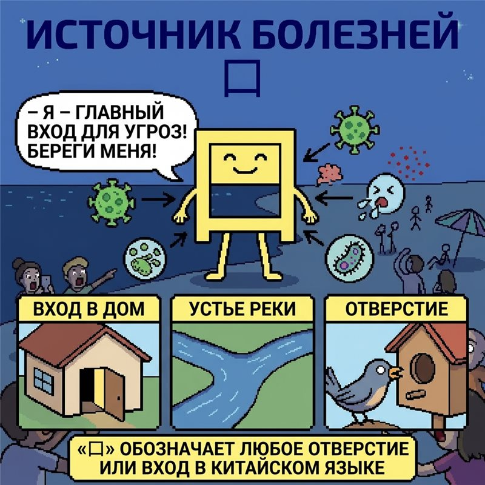

Енот Шуршик
Енот Шуршик
Шурх-шурх! Я — енот Шуршик. Ночью в этом волшебном лесу я нашёл старую книгу тайн. В ней — редкие факты об иероглифе 口!
Переверни странички-карточки, только аккуратно: книга волшебная и любит любопытных. 📖✨
ФАКТ №1
🤧
«Источник болезней»
нажми, чтобы перевернуть
В китайской культуре рот считается главным местом входа внешних угроз в организм. Береги 口 — и он скажет тебе «спасибо»!
ФАКТ №2
🕳️
«Любое отверстие»
нажми, чтобы перевернуть
Хотя основное значение 口 — «рот», «уста» или «губы», в китайском языке он обозначает любое отверстие или вход! Двери, окна, горлышки — всё это 口.
ФАКТ №3
😋😋😋
«Три рта»
нажми, чтобы перевернуть
Три рта сразу — это 品 (pǐn) — «товар, дегустировать»: много людей пробуют и обсуждают качество. Этот иероглиф ждёт тебя на следующем уроке!

клик — рассмотреть побольше 🔍
Страница из книги тайн енота Шуршика